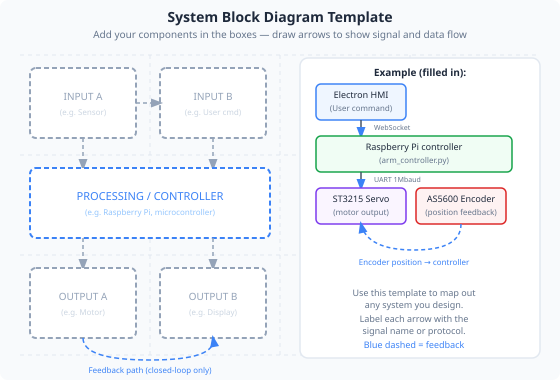

Writing clear, complete, and useful engineering documentation — circuit diagrams, annotated code, test records, and user guides.
An undocumented engineering project is only half-finished. Without documentation, a system cannot be safely maintained, repaired, or handed to someone else. In professional settings, missing documentation can be a legal liability.
A technician needs to fault-find two years later. Wiring diagrams and component lists save hours.
When you leave a project, someone else must understand it. Documentation is the bridge.
Regulatory approvals (CE marking, ISO certification) require evidence — test records, risk assessments, drawings.

| Document type | Purpose | Audience |
|---|---|---|
| Circuit / wiring diagram | Shows electrical connections and component values | Technicians, engineers |
| Block diagram | System overview — how subsystems connect | Engineers, managers |
| Annotated code | Explains why key sections of code work as they do | Developers, future maintainers |
| Test record | Documents what was tested, how, and the results | Engineers, quality assurance |
| Risk assessment | Identifies hazards and controls — legal requirement | Health & safety, operators |
| User guide / SOP | How to operate the system safely and correctly | Operators, students |
| Project report | Narrative of decisions made, evidence of process | Assessors, clients |
Good documentation is not about length — it is about clarity and completeness for the intended audience. Key principles:
A user guide for students uses different language than a maintenance manual for technicians.
Test records include actual measurements, not just "it worked". Show the data.
Date every document. Include a revision history so readers know which version is current.
A labelled photo, circuit diagram, or flowchart often communicates faster than paragraphs of text.
Produce a documentation pack for your robot arm project. Use the checklist below to ensure nothing is missing.
MoveJ, MoveLXYZ, or GripperClose line must be commented with the physical action it performs, the reason for the speed choice, and any safety consideration. A well-annotated RAPID program demonstrates professional programming practice.
In a survey of engineering employers, poor written communication consistently ranks in the top three skill gaps in new graduates. The ability to document a system clearly — so that someone else can understand, operate, and maintain it — is as valuable as the ability to build it.
The documentation pack you produce in this module is direct evidence of your engineering process. An assessor marking your project can tell, from your test records alone, whether you actually tested the system or just claimed it worked.
Think about: Could a student who was not in your class pick up your documentation pack and successfully operate your arm program? If not, what is missing?
1. A test record is most useful when it includes:
2. Which document type is specifically required by law for machinery used in a workplace?
3. Good documentation is best described as: